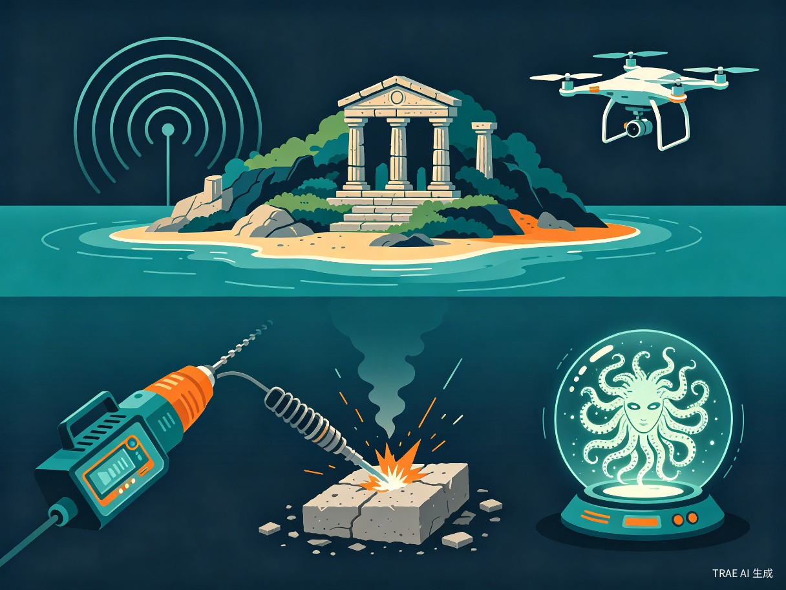

第六章：宝岛篇 — 石化之谜

千空团队乘坐珀耳修斯号横渡大海，抵达了传说中的"宝岛"。在这里，他们发现了石化装置Medusa的线索。
雷达/声纳技术Radar / Sonar Technology
剧中描述
千空开发了雷达设备用于探测远距离物体。通过发射无线电波并接收反射信号，可以确定目标的距离和方向。
科学原理
雷达（Radio Detection And Ranging）通过发射电磁波脉冲，接收目标反射的回波，根据往返时间计算距离。距离 = 光速 x 时间 / 2
现实对照
实用雷达由英国物理学家罗伯特·沃森-瓦特（Robert Watson-Watt）于1935年首次成功演示。[31]
准确性评估
雷达的基本原理正确，但千空在原始条件下制造高功率微波发射器和灵敏接收器的难度极大。
原理正确，制造难度被严重低估宝丽来相机Polaroid Camera
剧中描述
千空制造了即时成像相机（类似宝丽来），用于快速记录地形和情报。相机可以在拍照后立即获得图像，无需暗房冲洗。
科学原理
宝丽来相机的核心是即时显影胶片。曝光后，胶片中的化学试剂被挤出并均匀铺展，在短时间内完成显影、定影过程。
现实对照
宝丽来相机由美国科学家埃德温·兰德（Edwin Land）于1948年发明。[32]
准确性评估
即时成像的化学原理正确，但胶片的制造极其复杂，在原始条件下几乎不可能制造。
原理正确，制造难度被严重低估无人机（Drone）Unmanned Aerial Vehicle (Drone)
剧中描述
千空制造了遥控飞行器（无人机）用于空中侦察。无人机可以远程控制飞行，搭载相机进行拍照和实时视频传输。
科学原理
无人机飞行基于空气动力学。旋翼无人机通过高速旋转的螺旋桨产生升力，通过改变各旋翼的转速来控制飞行方向和姿态。
现实对照
无人机的概念可以追溯到一战时期，但现代消费级无人机的发展主要在21世纪。千空的版本更接近早期遥控模型飞机。[33]
准确性评估
遥控飞行器的原理可行，但千空需要同时解决轻质材料、微型电机、无线电遥控和电源等多个技术难题。
原理可行，系统集成难度极高超声波设备Ultrasonic Device
剧中描述
千空开发了超声波钻孔设备，利用高频振动来切割和钻孔坚硬材料。
科学原理
超声波加工利用压电效应或磁致伸缩效应产生高频机械振动（>20kHz），通过磨料悬浮液将振动能量传递到工件表面。
现实对照
超声波加工技术于20世纪50年代发展成熟。[34]
准确性评估
超声波加工的原理正确，但需要精密的压电陶瓷换能器和高频电源，在原始条件下难以实现。
原理正确，核心部件难以制造石化装置（Medusa）Petrification Device (Medusa)
剧中描述
千空在宝岛发现了石化装置Medusa——一种能将生物瞬间石化的神秘装置。Medusa发出特定波长的电磁波，触发石化反应。
科学原理
作品中的石化机制设定为：特定电磁波触发某种未知生物反应，将有机组织中的碳原子转化为碳酸钙（CaCO₃）等矿物质，同时保留完整的细胞结构。
现实对照
石化装置完全是虚构设定。现实中不存在任何能将生物瞬间石化的装置或自然现象。自然界中确实存在矿化化石（permineralization）过程，但需要数百万年。
准确性评估
石化装置是作品的核心虚构设定。
虚构设定暗号/密码学Cryptography
剧中描述
千空团队需要破解敌人的密码通信。千空运用密码学知识，通过频率分析、模式识别等方法破解了敌方暗号。
科学原理
密码学涉及加密和解密。经典密码包括替换密码（如凯撒密码）、换位密码等。破解方法包括频率分析、已知明文攻击等。
现实对照
密码学有数千年的历史。二战期间，英国数学家艾伦·图灵（Alan Turing）领导的团队破解了德军恩尼格玛密码。[35]
准确性评估
密码学的基本原理在作品中正确。
高度准确